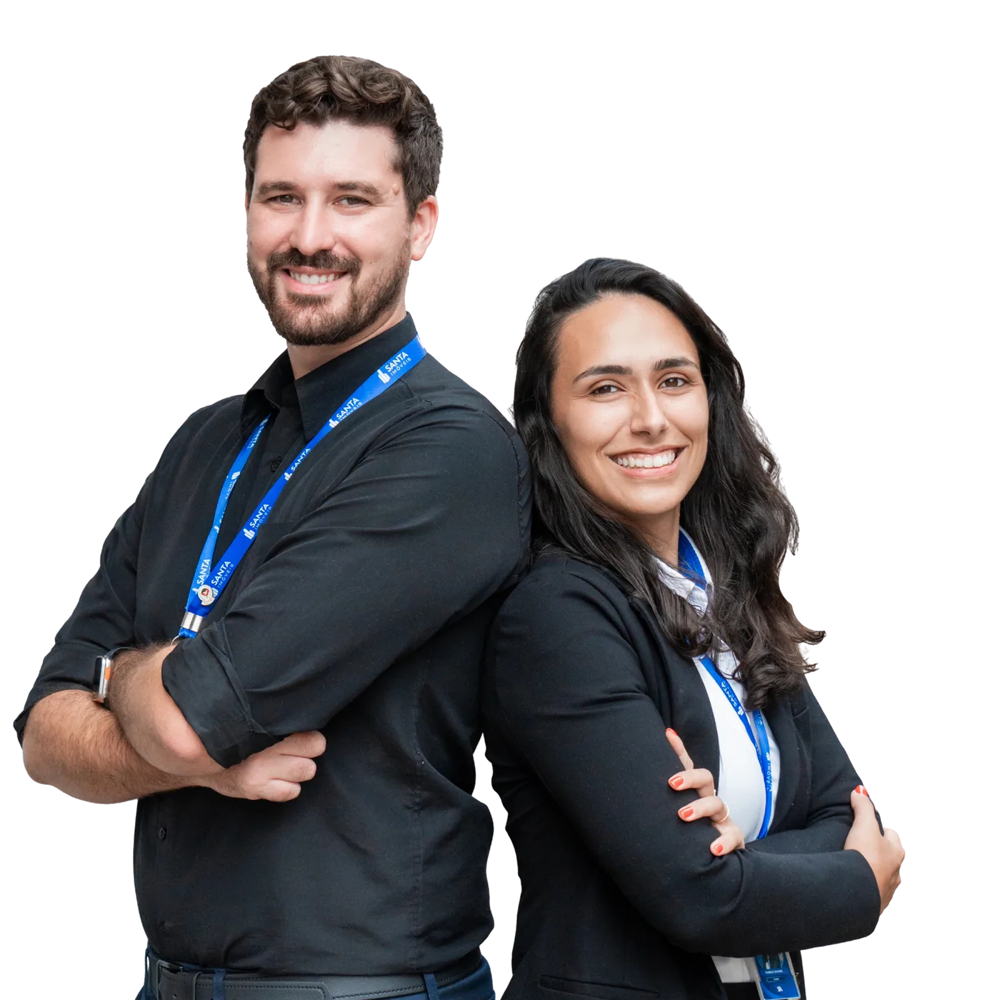
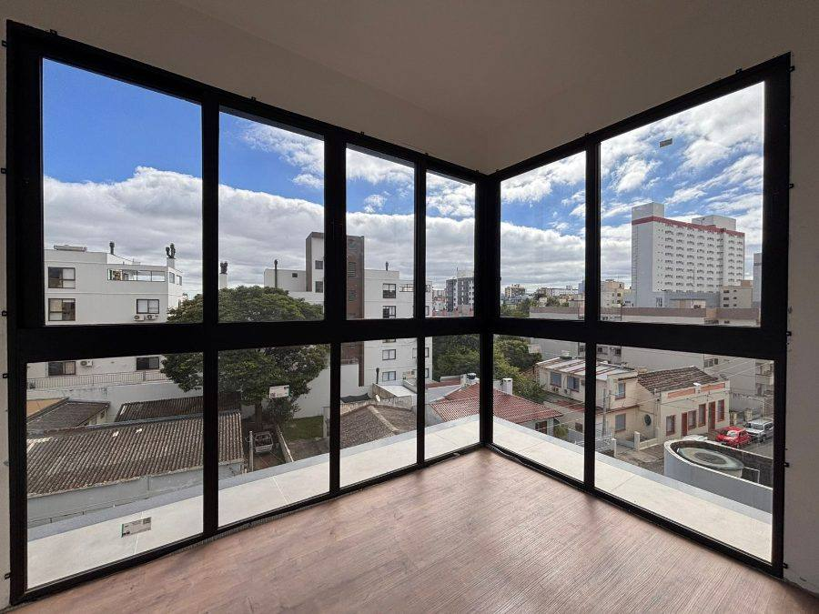
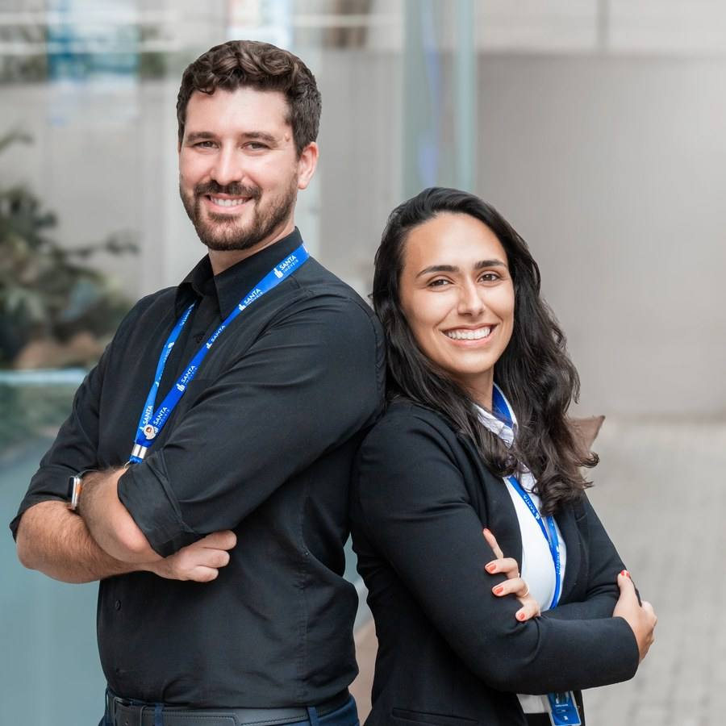

Engenharia civil. Administração. Recomeço em Santa Maria. E uma clareza que só vem de quem já esteve do outro lado.

"Em 2022, chegamos a Santa Maria carregando uma bagagem leve e um recomeço necessário."
Kamila saiu de Santa Maria jovem para estudar engenharia civil em Santa Cruz do Sul. Formada, abriu uma empresa de licitações e construção de casas. Seis anos depois — e com uma empresa funcionando — conheceu Ricardo em 2020.
Ricardo veio de Cachoeira do Sul, estudou Administração na UFSM aqui mesmo em Santa Maria, e foi pra área de telecom, onde desenvolveu técnicas de atendimento consultivo e liderança de equipes.
Namoramos à distância por dois anos. Em 2022, com um filho a caminho e uma decisão pra tomar, Ricardo deixou a empresa em que estava e foi pra Santa Cruz. Tentamos empreender juntos. Não deu certo. Encerramos a empresa com dívidas — e viemos pra Santa Maria buscar um recomeço.
Aqui, encontramos no mercado imobiliário não só uma carreira. Encontramos um propósito: ajudar famílias a conquistar o que nós próprios estávamos buscando — estabilidade, lar, um novo começo numa cidade que acolhe.
Hoje somos parceiros da Santa Imóveis e atuamos juntos em Santa Maria — com o olhar técnico da engenharia da Kamila e a habilidade de atendimento consultivo do Ricardo. Dois corretores, um único compromisso com o seu resultado.

Ricardo Mello
CRECI/RS 082996
Formado em Administração pela UFSM, com trajetória na área de telecom desenvolvendo liderança e atendimento consultivo. Em Santa Maria desde 2022, construiu sua carreira no mercado imobiliário com foco em financiamento habitacional e relacionamento com o cliente do primeiro contato até as chaves.
Especialidade: primeiro imóvel, financiamento bancário e MCMV, atendimento ao cliente com clareza e sem pressão.

Kamila Xavier
CRECI/RS 78710
Engenheira Civil formada em Santa Cruz do Sul, com experiência em licitações e construção de casas. O olhar técnico que só uma engenheira tem — para avaliar estrutura, qualidade construtiva e potencial real de cada imóvel — aplicado ao atendimento dos clientes da KR Imóveis em Santa Maria.
Especialidade: avaliação técnica de imóveis, construtoras, imóveis na planta e financiamento habitacional.
Simulação gratuita. Atendimento do início ao fim. Sem pressão.